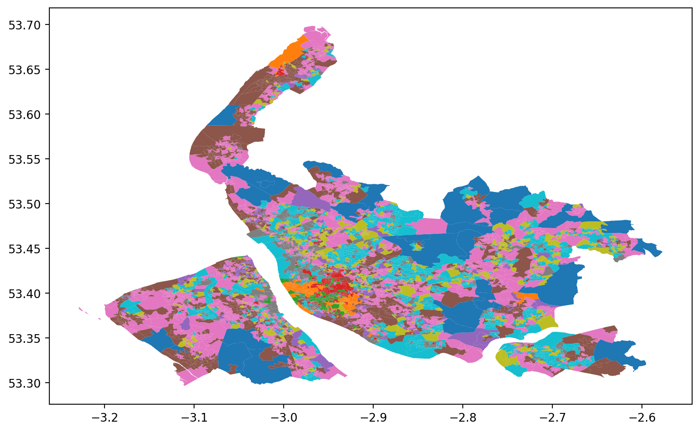

OA11CD Local Authority Name Subgroup Code \
0 E00032987 Liverpool 3a1
1 E00032988 Liverpool 2a3
2 E00032989 Liverpool 3b3
3 E00032990 Liverpool 3d3
4 E00032991 Liverpool 3b3
geometry
0 POLYGON ((-2.97625 53.39928, -2.97623 53.39910...
1 POLYGON ((-2.96889 53.39860, -2.96891 53.39835...
2 POLYGON ((-2.96437 53.39898, -2.96439 53.39897...
3 POLYGON ((-2.96452 53.39792, -2.96453 53.39797...
4 POLYGON ((-2.96698 53.39773, -2.96691 53.39772...
# to run this from within the notebook, first comment out this line and save...
# ...and then uncomment the line to run it -- otherwise, Pweave will get stuck...
# ...in an infinite loop and be unable to finish processing the notebook
# ! ../bits/publi.sh